Data Structures and Algorithms
with Object-Oriented Design Patterns in C++
Data Structures and Algorithms
with Object-Oriented Design Patterns in C++
Consider a directed graph  with n vertices,
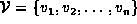.
The simplest graph representation scheme
uses an 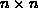 matrix A of zeroes and ones given by
with n vertices,
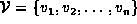.
The simplest graph representation scheme
uses an 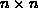 matrix A of zeroes and ones given by
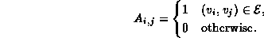
I.e., the  element of the matrix,
is a one only if 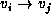 is an edge in G.
The matrix A is called an
adjacency matrix .
element of the matrix,
is a one only if 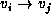 is an edge in G.
The matrix A is called an
adjacency matrix .
For example, the adjacency matrix for graph  in Figure
in Figure  is
is
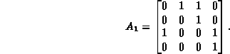
Clearly, the number of ones in the adjacency matrix is equal to the number of edges in the graph.
One advantage of using an adjacency matrix is that it is easy to
determine the sets of edges emanating from and incident on a given vertex.
E.g., consider vertex  .
Each one in the
.
Each one in the  row corresponds to an edge
that emanates from vertex
row corresponds to an edge
that emanates from vertex  .
Conversely, each one in the
.
Conversely, each one in the  column
corresponds to an edge incident on vertex
column
corresponds to an edge incident on vertex  .
.
We can also use adjacency matrices to represent undirected graphs.
I.e., we represent an undirected graph  with n vertices,
using an matrix A of zeroes and ones given by
with n vertices,
using an matrix A of zeroes and ones given by
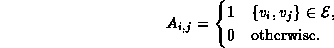
Since the two sets 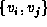 and 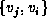 are equivalent,
matrix A is symmetric about the diagonal.
I.e., 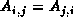.
Furthermore, all of the entries on the diagonal are zero.
I.e., 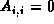 for  .
.
For example, the adjacency matrix for graph  in Figure is
in Figure is
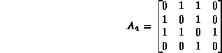
In this case, there are twice as many ones in the adjacency matrix as there are edges in the undirected graph.
A simple variation allows us to use an adjacency matrix to represent an edge-labeled graph. For example, given numeric edge labels, we can represent a graph (directed or undirected) using an matrix A in which the 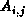 is the numeric label associated with edge 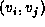 in the case of a directed graph, and edge , in an undirected graph.
For example, the adjacency matrix for the graph  in Figure is
in Figure is
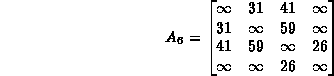
In this case, the array entries corresponding to non-existent edges
have all been set to  .
Here
.
Here  serves as a kind of sentinel .
The value to use for the sentinel depends on the application.
For example, if the edges represent routes between geographic locations,
then a route of length
serves as a kind of sentinel .
The value to use for the sentinel depends on the application.
For example, if the edges represent routes between geographic locations,
then a route of length  is much like one that does not exist.
is much like one that does not exist.
Since the adjacency matrix has 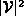 entries,
the amount of spaced needed to represent the edges of
a graph is 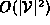,
regardless of the actual number of edges in the graph.
If the graph contains relatively few edges,
e.g., if 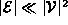,
then most of the elements of the adjacency matrix will be zero (or  ).
A matrix in which most of the elements are zero (or
).
A matrix in which most of the elements are zero (or  )
is a sparse matrix .
)
is a sparse matrix .
 Copyright © 1997 by Bruno R. Preiss, P.Eng. All rights reserved.
Copyright © 1997 by Bruno R. Preiss, P.Eng. All rights reserved.